XNView MP བཀོལ་སྟངས།
- སྔོན་འགྲོའི་སྙི་ཆས་ཕབ་ལེན།
- པར་སྣོད་དང་མཁོ་སྒྲུབ་ཨང་།
- བཤེར་པར་ངོ་བཤུས་བྱེད་ཚུལ།
- 预览 ནང་གི་ཚོན་མདོག་བརྗེ་སྟངས།
- ཤོག་འཐའི་གྲིབ་ནག་གཏུབ་ཚུལ།
- ཤོག་གྲངས་ཞིབ་བཤེར།
- ཤོག་ཚབ་སྲུབ་འཇུག་བྱེད་ཚུལ།
- མིང་གཅིག་གྱུར་དང་བསྐྱར་འདོགས།
- དྲ་སྤེལ་པར་སྣོད་གྲ་སྒྲིག
- dpi གཅིག་གྱུར་བཟོ་ཚུལ།
- པར་ངོས་ཀྱི་མཐོ་ཞེང་གཅིག་གྱུར།
- G4 སྐྱ་པར་བཟོ་ཚུལ།
- ཚོན་ལྡན་རིགས་JPG ལ་བསྒྱུར་དགོས།
- རྒྱབ་ཤའི་ཆེ་ཆུང་སྣོན་སྒྲིག
- XNView སྙི་ཆས་བསྐྱར་སྒྲིག
༡ སྔོན་འགྲོའི་སྙི་ཆས་ཕབ་ལེན།
བཤེར་པར་ཞིབ་འཇུག་གི་མགོ་གཞུག་ཀུན་ཏུ་XNView སྙི་ཆས་འདི་བཀོལ་དགོས་པས། དང་པོ་སྙི་ཆས་དེ་འདི་ནས་ཕབ་ལེན་བྱེད་དགོས།
| དང་པོ་གཉིས་སྒེའུ་ཁུང་རྟགས་ཅན་གྱི་ཆེད་དང་ཐ་མ་དེ་ཀུ་ཤུ་རྟགས་ཅན། | མཚོན་རྟགས། |
|---|---|
༢ པར་སྣོད་དང་མཁོ་སྒྲུབ་ཨང་།
དང་པོ། ཁྱེེད་ཀྱི་གློག་ཀླད་ཀྱི་Drive ཆེ་ཤོས་ནང་བཤེར་པར་ལྡུག་སའི་པར་སྣོད་ཅིག་བཟོས་ཏེ་བཤེར་པར་རྣམས་དེའི་ནང་ཕབ་བཤུས་བྱེད་དགོས། པར་སྣོད་དེའི་ཁ་ཡིག་ལ་དཔེ་ཆ་དེའི་མཁོ་སྒྲུབ་ཨང་སྤྲོད་དགོས། མཁོ་སྒྲུབ་ཨང་ནི་བཤེར་འབེབས་པས་དཔེ་ཆ་རྣམས་བཤེར་འབེབས་བྱས་ཚར་རྗེས་བརྩམས་ ཆོས་སོ་སོར་གནས་སྐབས་རིང་ངོས་འཛིན་བདེ་ཕྱིར་དམིགས་བསལ་གྱི་ཨང་གྲངས་རེ་སྤྲད་པ་དེ་ལ་ཟེར། དེ་ནི་ཡིག་འབྲུ་དང་ཨང་གྲངས་གཉིས་ཀྱིས་གྲུབ་པའི་ཡིག་འབྲུ་བདུན་གྱི་རྣམ་པ་ཅན་ཞིག་ཡིན། དཔེར་ན། ABC1234 ལྟ་བུ་ཡིན།
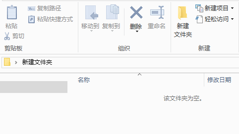
པར་སྣོད་དེའི་ནང་དཔེ་ཆ་དེའི་དན་གྲངས་གོང་མ་ངེས་པར་ཡོད་དགོས། གོང་བཀོད་མཁོ་སྒྲུབ་ཨང་ཅན་གྱི་པར་སྣོད་ནང་ཡང་བསྐྱར་པར་སྣོད་ཅིག་བཟོས་ཏེ་དེའི་ཁ་ཡིག་ལ་ཡིག་ཚགས་archive ཞེས་འདོགས་དགོས། གལ་ཏེ་པོ་ཏི་དུ་མ་ཅན་གྱི་རིགས་ཡིན་ཚེ་ཡིག་ཚགས་པར་སྣོད་archive ནང་པོད་གྲངས་དང་བསྟུན་བའི་པར་སྣོད་བཟོ་དགོས། དེ་རེ་རེའི་མིང་ལ་01- 02- 03 ལྟ་བུ་རིམ་པར་འདོགས་དགོས། མདོར་ན་པོད་རེ་ལ་པར་སྣོད་རེ་ཡོད་དགོས།
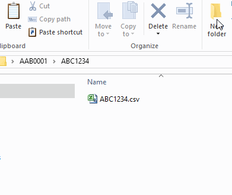
༣ བཤེར་པར་ངོ་བཤུས་བྱེད་ཚུལ།
ཁྱེད་ཀྱི་གློག་ཀླད་ནང་ད་སྔ་བཟོས་པའི་པར་སྣོད་ནང་མཐེབ་སྡེར་དང་ཡང་ན་སྲ་སྡེར་གང་རུང་ནས་ཁྱེད་ཀྱི་བཤེར་པར་རྣམས་ཕབ་ལྡུག་བྱེད་དགོས། འོག་གི་དཔེ་རིས་དེས་ཁྱེད་ཀྱིས་ད་བར་བཟོས་པའི་མཁོ་སྒྲུབ་ཨང་ཅན་གྱི་པར་སྣོད་དང་དེའི་ནང་གསེས་ཡིག་ཚགས་པར་སྣོད་དེ་ལའང་ནང་ གསེས་པོད་གཉིས་ཅན་གྱི་པར་སྣོད། དན་གྲངས་གོང་མ། བཤེར་པར་བཅས་མཉམ་འཛོམས་བྱུང་ཡོད་པའི་རྣམ་པ་རེད།
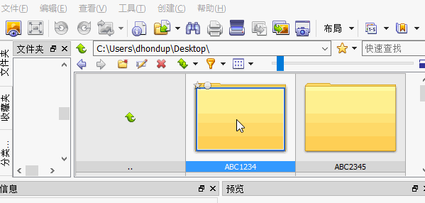
༤ 预览 ནང་གི་ཚོན་མདོག་བརྗེ་སྟངས།
འདིའི་ནང་གི་ཚོན་མདོག་ནི་དཔེ་ཆའི་ཤོག་ངོས་དང་འཚམ་མིན་གྱི་ཁྱད་པར་ཡོད་སྟབས་ཚོན་མདོག་རན་པོ་ཞིག་འདེམ་རྒྱུ་གལ་ཆེན་ཡིན།

༥ ཤོག་འཐའི་གྲིབ་ནག་གཏུབ་ཚུལ།
གཏུབ་ཐབས་རིགས་གཉིས་ཡོད་དེ་རང་གིས་སྒྲིག་འགོད་བྱས་ཏེ་གཏུབ་སྟངས་དང་རང་འགུལ་གཏུབ་གྲིས་གཏུབ་སྟངས་གཉིས་ཡོད། འདི་གཉིས་ཆ་གང་ཡིན་རུང་XNView སྙི་ཆས་འདི་སྤྱད་དེ་བཤེར་པར་རྣམས་ཀྱི་མཐའི་གྲིབ་ནག་རིགས་གཏུབ་དགོས། དང་པོ། 裁剪 རང་གིས་སྒྲིག་འགོད་བྱས་ཏེ་གཏུབ་སྟངས་ གཤམ་གསལ་བཞིན།
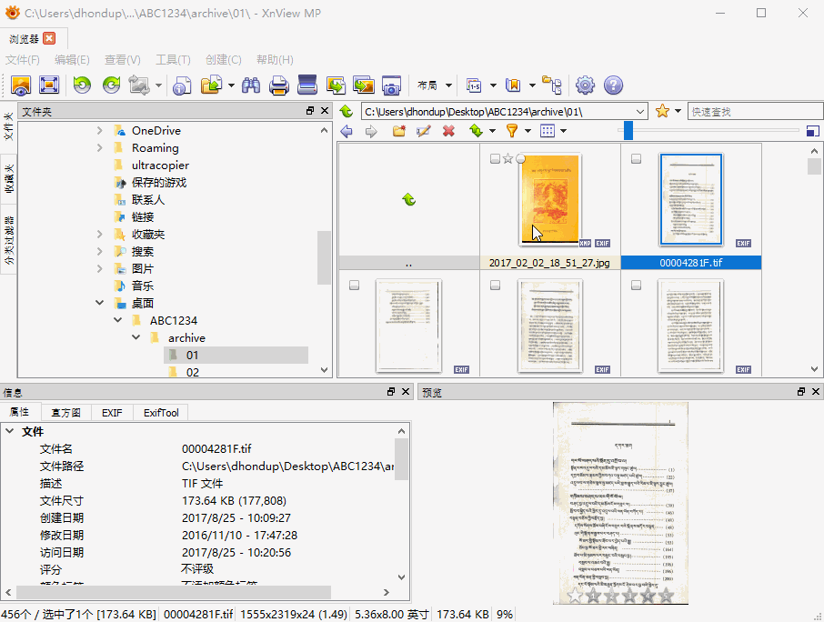
འདི་ནས་གྲིབ་ནག་གཡས་གཡོན་དང་མགོ་གཞུག་གང་ནས་གཏུབ་དགོས་མིན་ལ་བལྟས་ཏེ་འདེམ་གསེས་བྱེད་དགོས། གྲིིབ་ནག་གི་ཆེ་ཆུང་དང་བསྟུན་ནས་ཨང་གྲངས་བྲིས་ཏེ་རིམ་པར་གཏུབ་དགོས་པ་ཡིན། འདི་དང་རིགས་བསྒྲེ་སྟེ་གྲིབ་ནག་རིགས་ཡོངས་གཏུབ་སྟངས་ཤེས་པར་བྱའོ།།
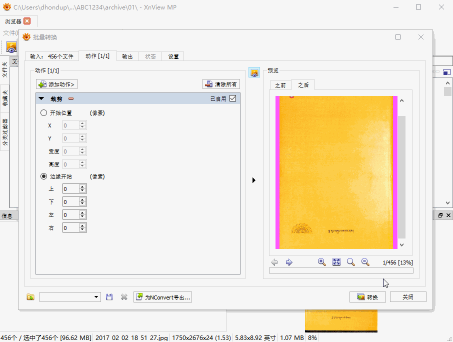
ཐབས་ལམ་གཞན་ཞིག་ནི་གྲིབ་ནག་གི་ཆེ་ཆུང་དང་གྲིབ་ནག་ཤོག་ངོས་ཀྱི་ཕྱོགས་གཅིག་ལ་ཡོད་པའི་ཤོག་ངོས་རྣམས་སྡེབ་གཅིག་ལ་བདམས་ཏེ་སྡེབ་གཏུབ་བྱེད་ཐུབ། འོག་གི་དཔེ་རིས་ལ་གཟིགས།
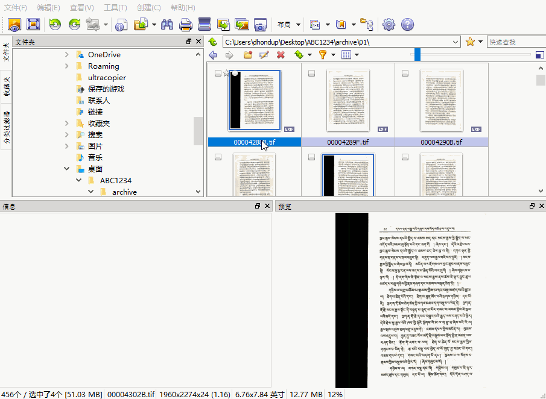
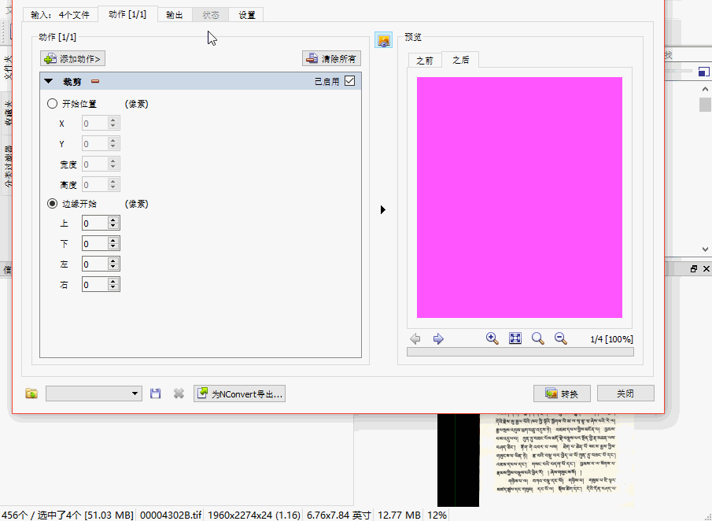
དཔེ་རིས་ངོས་སུ་གསལ་བ་བཞིན་སྟེགས་བུ་དེའི་འོག་གི་མདའ་རྩེ་གཡས་གཡོན་གཉིས་ལ་སྣུན་ན་གཏུབ་བཞིན་བའི་ཤོག་ངོས་རྣམས་ཇི་ལྟར་ཆགས་ཡོད་མེད་ཐད་ཞིབ་ལྟ་བྱེད་ཐུབ་པ་ཡིན།
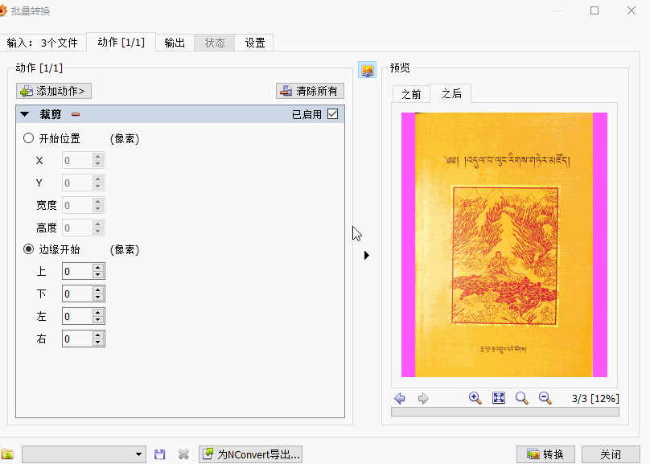
སྟེགས་བུ་དེའི་ཀླད་ཀྱི་མདའ་རྩེ་གཡས་གཡོན་གཉིས་སུ་སྣུན་ན་གཏུབ་བཞིན་པའི་ཤོག་ངོས་དེ་སྔ་མ་དང་གཏུབ་རྗེས་ཀྱི་རྣམ་པ་ཇི་ལྟར་འགྱུར་ཡོད་མེད་ལ་ཞིབ་འཇུག་བྱེད་ཐུབ། སྐབས་འདིར་དཔེ་ཆ་དང་དཔེ་ཀློག་ལ་གནོད་པའི་ནོར་སྐྱོན་རིགས་ཡོད་དོ་ཅོག་ནོར་འཁྲུལ་ཐོ་དེབ་ནང་བརྩམས་ཆོས་ཨང་དང་ཤོག་གྲངས། ནོར་འཁྲུལ་གང་ཡིན་བཅས་ཁ་གསལ་འགོད་དགོས།
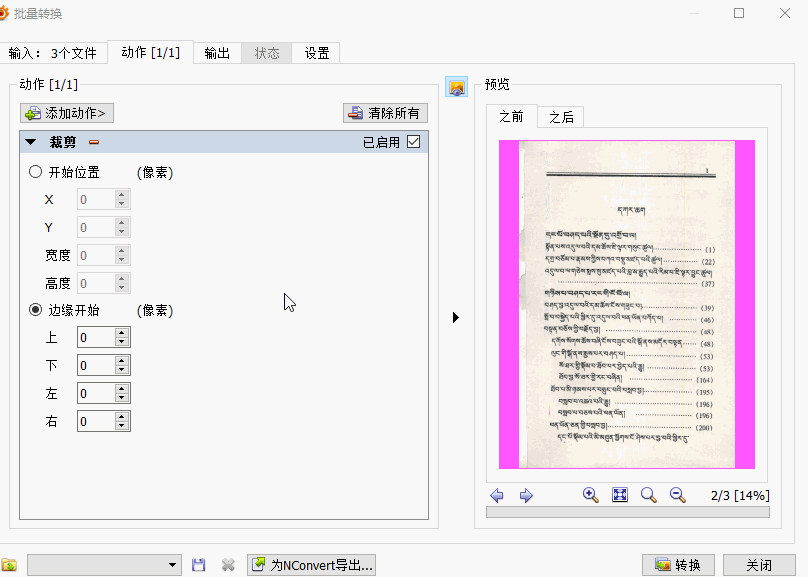
གཉིས་པ། 自动裁剪རང་འགུལ་གཏུབ་གྲིས་གཏུབ་སྟངས་ནི་སྟབས་བདེ་ཙམ་ཡིན་མོད་དེ་ཙམ་གྱིས་ཞིབ་ཚགས་མེད།
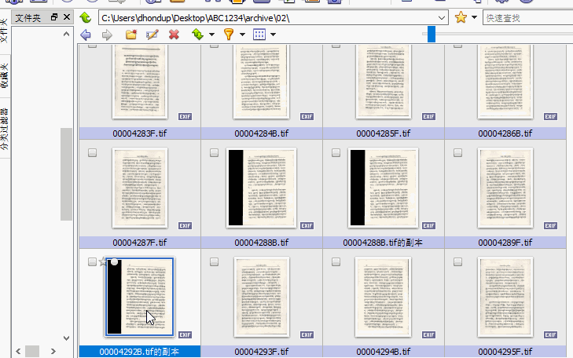
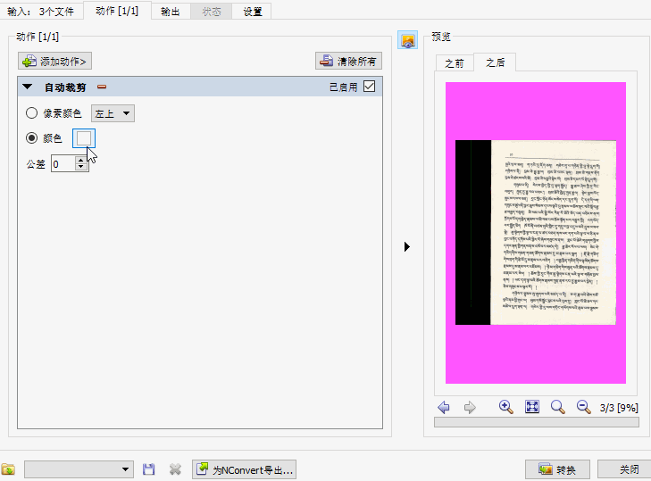
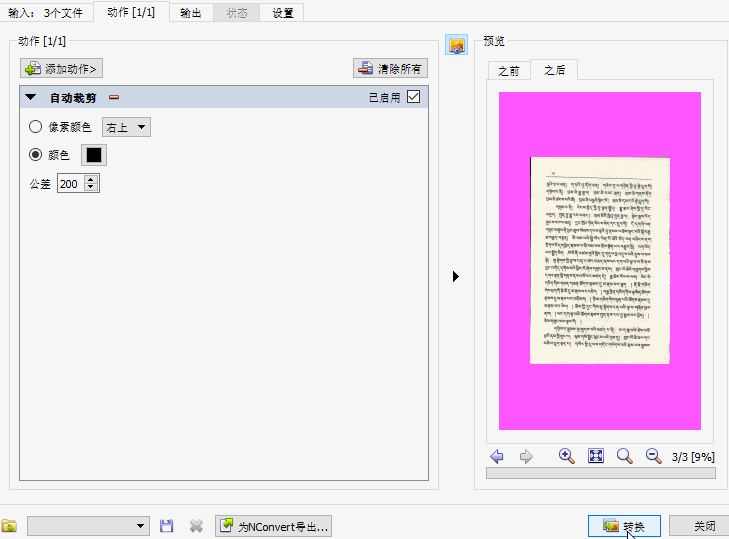
༦ ཤོག་གྲངས་ཞིབ་བཤེར།
འདིའི་ཐད་གཙོ་བོ་ནོར་འཁྲུལ་རིགས་གཉིས་ཏེ་ཆད་ལྷག་གཉིས་ཡོད། གྲིབ་ནག་གཏུབ་རྗེས་བརྩམས་ཆོས་དེའི་ཤོག་གྲངས་ཚང་མིན་དང་ནོར་འཛོལ་རིགས་བྱུང་ཡོད་མེད་ལ་ཞིབ་འཇུག་བྱེད་དགོས། ཞིབ་འཇུག་བྱེད་ཐབས་དུ་མ་ཡོད་མོད་འདིར་ངོ་སྤྲོད་བྱེད་རྒྱུའི་ཐབས་ལམ་ནི། དང་པོ་དབུ་ཤོག་ནས་དཀར་ཆག་ལ་ཐུག་གི་ བར་ཨང་སྡེ་གཅིག་བཟོས། གཉིས་པ། དཀར་ཆག་ནས་གཞུང་དངོས་ལ་ཐུག་གི་བར་ཨང་སྡེ་གཅིག་བཟོས། གསུམ་པ། གཞུང་དངོས་ལ་ཨང་སྡེ་གཅིག་བཟོས་ན་ཤོག་གྲངས་ཞིབ་འཇུག་ཧ་ཅང་སྟབས་བདེ་ཡིན་ཏེ། བརྩམས་ཆོས་རང་གི་ཤོག་གྲངས་དང་ད་ལྟ་སྤྲད་པའི་ཨང་གྲངས་གཉིས་གཅིག་མཚུངས་ཡིན་སྟབས་དེ་གཉིས་ གཤིབ་བསྡུར་བྱས་པ་ཙམ་གྱིས་ཤོག་ངོས་ཚང་མིན་ངོས་འཛིན་ཐུབ་པ་ཡིན།

རིམ་པས་ཨང་སྡེ་སོ་སོའི་ཤོག་ངོས་ཀྱི་ཨང་གྲངས་དང་ད་ལྟ་སྤྲད་པའི་ཨང་གཉིས་གཤིབ་བསྡུར་བྱས་རྗེས། གལ་ཏེ་ཤོག་གྲངས་དེ་གཉིས་གཅིག་གྱུར་ཡིན་ཚེ་ཤོག་གྲངས་ཕལ་ཆེར་ཚང་ཡོད་པ་ཡིན། འོན་ཀྱང་། སྐབས་འདིར་ད་ལྟ་སྤྲད་པའི་ཤོག་གྲངས་དེ་བརྩམས་ཆོས་རང་གི་ཤོག་གྲངས་ལས་ཤོག་ངོས་གཉིས་ཀྱི་མང་བ་ཡོད། རྒྱུ་རྐྱེན་བཤེར་འབེབས་སྐབས་ཤོག་ངོས་ལྷག་མ་གཉིས་ཤོར་ཡོད་པ་རེད།
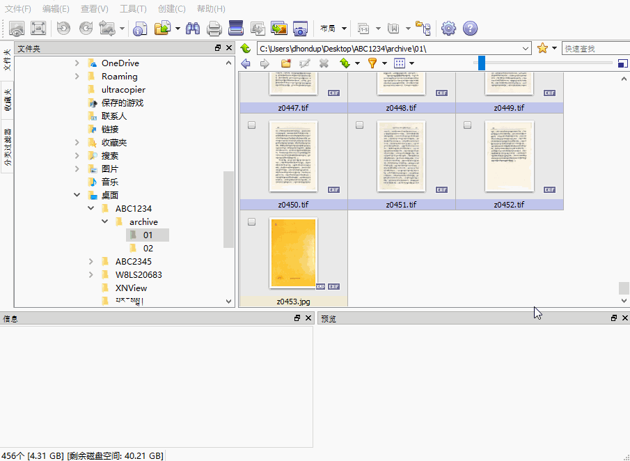
ཤོག་ངོས་ཐོལ་བ་དེ་གཉིས་འཚོལ་ཞིབ་རྗེས་སུབ་དགོས། བསུབ་རྗེས་སྡེ་ཚན་དེའི་མིང་བསྐྱར་འདོགས་བྱས་ན་ད་གཟོད་ཨང་གྲངས་དེ་གཉིས་གཅིག་གྱུར་ཆགས་ཡོང་།
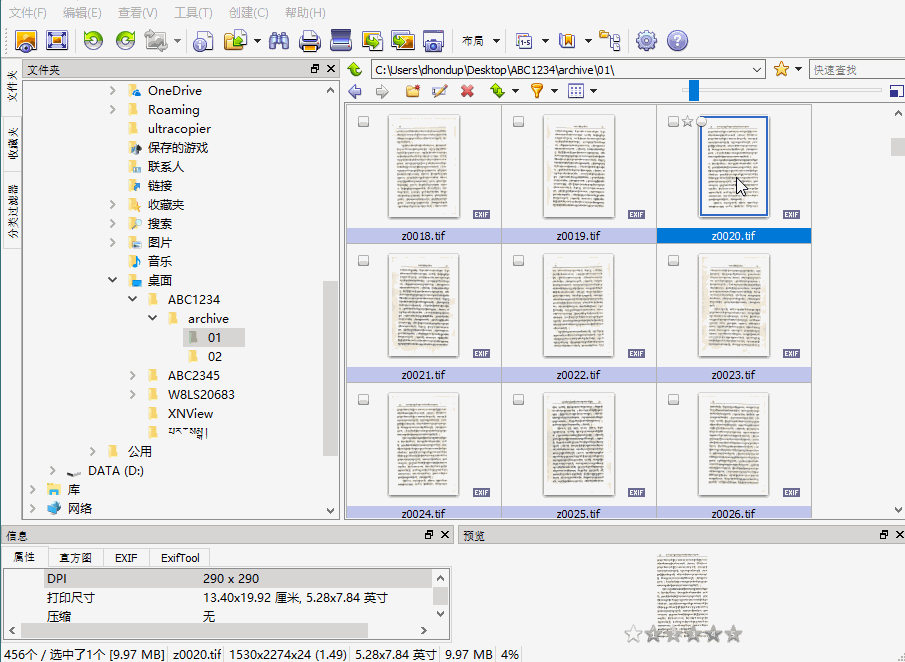
སྡེ་ཚན་ཨང་བསྐྱར་སྤྲོད་བྱས་རྗེས་ཤོག་གྲངས་དེ་གཉིས་གཅིག་གྱུར་བྱུང་བ་དང་ཚང་ཡོད་པའི་རྣམ་པ།

༧ ཤོག་ཚབ་སྲུབ་འཇུག་བྱེད་ཚུལ།
འདིར་བརྩམས་ཆོས་རང་གི་ཤོག་གྲངས་དེ་ད་ལྟ་སྤྲད་པའི་ཤོག་གྲངས་ལས་ཤོག་ངོས་གཉིས་ཀྱིས་ཉུང་བ་ཡོད་སྟབས། བཤེར་འབེབས་སྐབས་ཤོག་ངོས་གཉིས་ཆད་ཡོད་པ་རེད། དེའི་ཕྱིར་ཤོག་ངོས་དེ་གཉིས་འཚོལ་ཞིབ་དང་དེ་གཉིས་ཀྱི་ཚབ་ལ་ཤོག་སྟོང་གཞན་གཉིས་སྲུབ་འཇུག་བྱེད་དགོས། དེའི་རྗེས་སྡེ་ཚན་དེ་ལ་མིང་བསྐྱར་ འདོགས་བྱོས་དང་ཤོག་གྲངས་གཉིས་དེ་སྙོམ་སྒྲིག་བྱེད་ཡོང་བ་ཡིན།
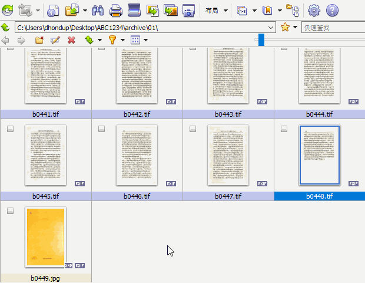
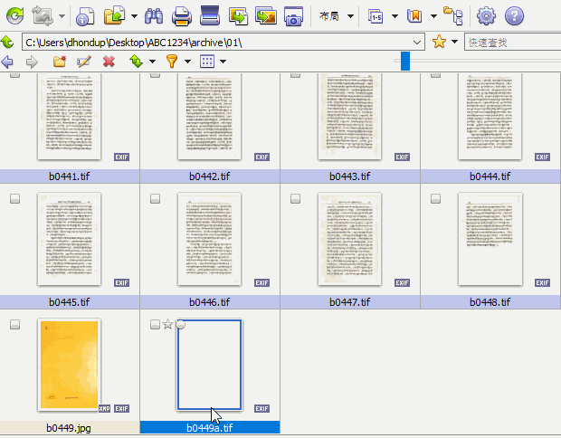

༨ མིང་གཅིག་གྱུར་དང་བསྐྱར་འདོགས།
ཤོག་གྲངས་ཞིབ་འཇུག་གི་རིམ་པ་ལེགས་པར་གྲུབ་རྗེས་བརྩམས་ཆོས་ཧྲིལ་བོར་མིང་ངམ་ཨང་གྲངས་གཅིག་གྱུར་ངང་བསྐྱར་སྤྲོད་བྱེད་དགོས། འོག་གི་པར་རིས་ངོས་སུ་གསལ་བ་བཞིན་སྟེགས་བུ་དེའི་ནང་རྟགས་འདི་བཞི་ཙམ་འགོད་དགོས དེ་ནི་ཤོག་གྲངས་ཀྱི་ཚབ་ཡིན་ཏེ་ཤོག་ངོས་ལྔ་བ་བརྒྱ་ཡོད་ཚེ་རྟགས་འདི་༥ འགོད་དགོས། ཐེབས་གཞོང་སྒང་གི་ Ctrl + 3 མནན་ན་རྟགས་འདི་འཆར་ཡོང་།

༩ དྲ་སྤེལ་པར་སྣོད་གྲ་སྒྲིག
བརྩམས་ཆས་དེའི་མིང་གཅིག་གྱུར་བཏགས་རྗེས་ཡིག་ཚགས་པར་སྣོད་ archive ལེགས་པར་གྲུབ་པ་རེད། འདི་ནས་དྲ་སྤེལ་སྣོད་ཀྱི་རིམ་པ་ཡིན་ཏེ། གོང་གི་ཡིག་ཚགས་པར་སྣོད་དེ་ངོ་བཤུས་གཅིག་བྱས་ཏེ་ངོ་བཤུས་དེའི་མིང་ཨིན་ཡིག་ནང་ image (དྲ་སྤེལ་པར་སྣོད།) ཞེས་འདོགས་དགོས། འདིའི་མིང་གཞན་ web image ཡང་ཟེར།
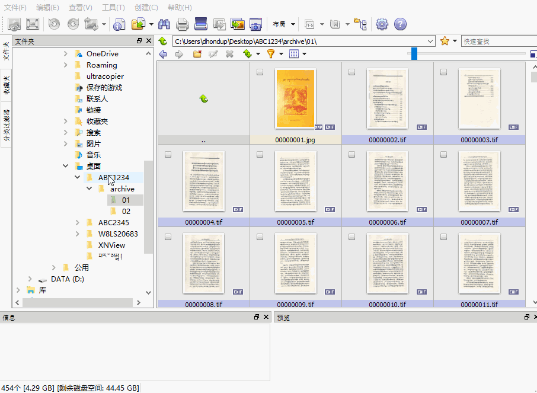
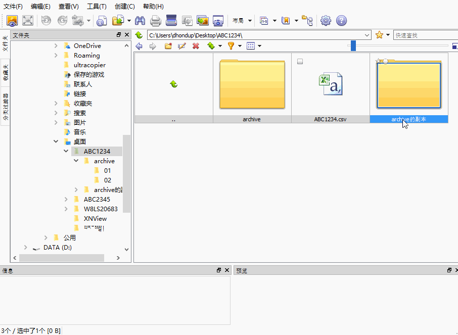
༡༠ dpi གཅིག་གྱུར་བཟོ་ཚུལ།
ད་ནི་དྲ་སྤེལ་པར་སྣོད་བཟོ་སྒྲིག་གི་རིམ་པ་ཡིན་ཏེ། ཤོག་ངོས་རེ་རེའི་སྟེང་བསྣུན་ཏེ་དེའི་མཐོ་ཚད་དང་ཞེང་ཚད། སྤྱིའི་ཆེ་ཚད་དང་རྣམ་སྒྲིག གསལ་ཆ་དང་dpi ཡོ་འཁྱོག་ཡོད་མེད་དང་བརྩམས་ཆོས་དེའི་ཤོག་ངོས་གཅིག་གྱུར་ཡིན་མིན་བཅས་ཞིབ་བརྟག་བྱས་རྗེས། རིམ་པས་ཤོག་ངོས་མང་ཤོས་གྱི་ཚད་གཞི་གང་ཡིན་གཙོར་བཟུང་གིས་སྙོམ་སྒྲིག་བྱེད་དགོས། སྐབས་འདིར་རྒྱབ་ཤ་རྒྱབ་མདུན་གཉིས་ཀྱི་dpi ཤོག་ངོས་གཞན་ལས་ཆེ་བ་ཡོད་སྟབས་དེ་གཞན་དང་སྙོམ་སྒྲིག་བྱེད་དགོས།
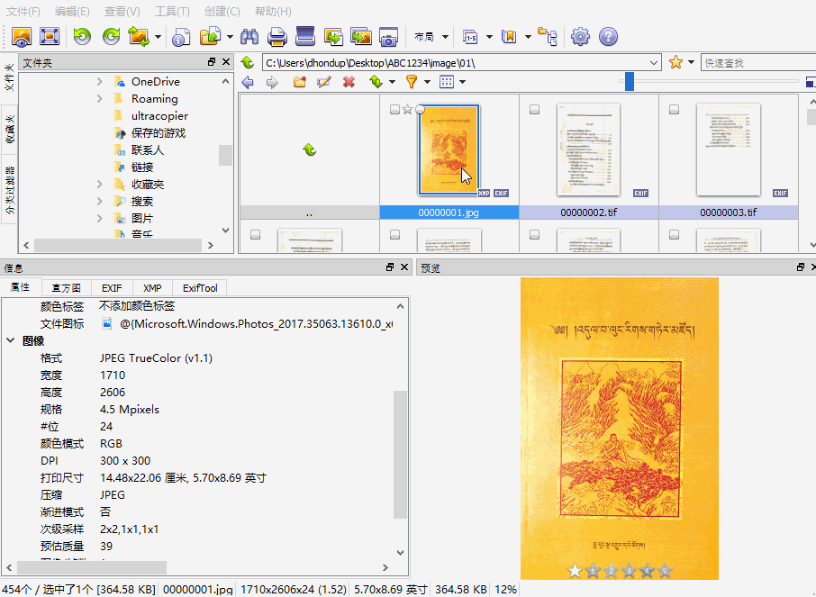
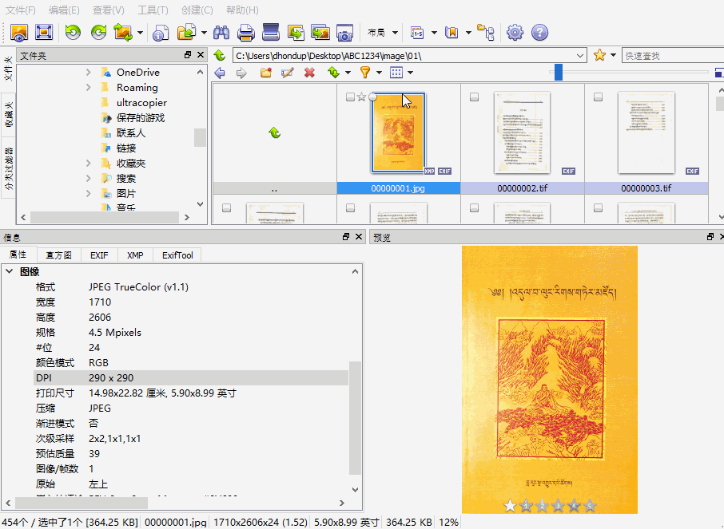
འདི་ལྟར་བསྐྱར་བསྒྲིག་བྱས་རྗེས་རྒྱབ་ཤ་རྒྱབ་མདུན་གཉིས་ཀྱི་dpi ཤོག་ངོས་གཞན་རྣམས་དང་གཅིག་གྱུར་ཆགས་ཡོད་པའི་རྣམ་པ་རེད། བཤེར་པར་ཚོན་ལྡན་དང་སྐྱ་པར་རིགས་གང་ཡིན་རུང་དེའི་གསལ་ཆ་༤༠༠ ལས་བརྒལ་ཡོད་ཚེ་༤༠༠ ལས་ཆུང་བར་བསྒྱུར་དགོས།

གལ་ཏེ་ཤོག་ངོས་མགོ་གཞུག་ལོག་པ་དང་འཕྲེད་ལ་ཉལ་བ་ལྟ་བུའི་རིགས་ལ་ཀླད་ཀྱི་ཡོ་བསྲང་བཀོལ་ཏེ་བསྲང་དགོས།

༡༡ པར་ངོས་ཀྱི་མཐོ་ཞེང་གཅིག་གྱུར།
ཤོག་ངོས་རེ་རེའི་མཐོ་ཚད་དང་ཞེང་ཚད་གཅིག་གྱུར་ཡོད་མེད་ཞིབ་འཇུག

དང་པོ། ཤོག་ངོས་ཡོངས་ཀྱི་སྤྱིའི་ཆེ་ཆུང་གཅིག་གྱུར་ཡིན་དགོས། དེའི་ཕྱིར་དང་པོ་བསྐྱར་ཚད་ 调整大小 སྒོ་ཕྱེས་ཏེ་ཤོག་ངོས་ཤིག་གི་ཆེ་ཆུང་གི་ཚད་གཞི་དཔེར་ན་(མཐོ་ཚད་༡༥༡༥ དང་ ཞེང་ཚད་༢༢༨༩) ལྟ་བུ་ཞིག་ཉར་ཏེ་དེའི་ཆེ་ཆུང་སྤྱི་ལ་བསྒྱུར་དགོས། འདིའི་ནང་གཙོ་བོ་ཤོག་ངོས་ཀྱི་མཐོ་ཚད་གཅིག་གྱུར་དང་གཏན་ འབེབས་བཟོ་བ་དང་།
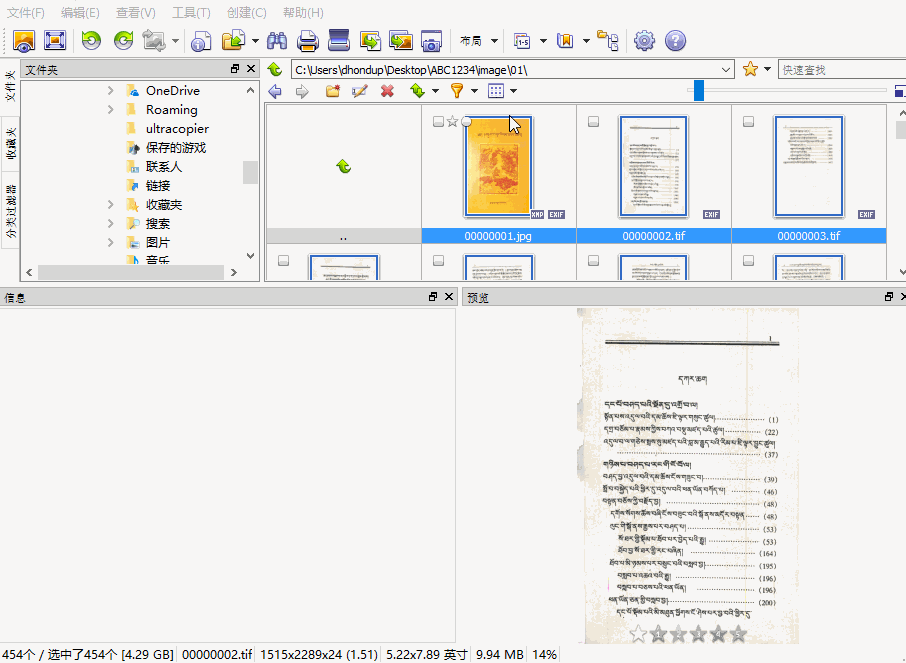
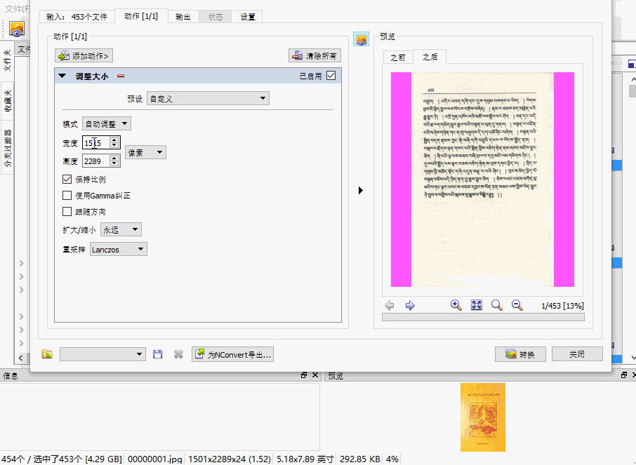
གཉིས་པ། གོང་ཞུས་ལྟར་བསྐྱར་ཚད་དེ་ 调整大小 ནང་གཙོ་བོ་བཤེར་པར་རྣམས་ཀྱི་མཐོ་ཚད་གཅིག་གྱུར་བཟོ་དགོས་པ་དང་། ཕྱི་སྒྲོམ་ཚད་ཤིང་སྟེ 画布大小 ནང་བཤེར་པར་རྣམས་ཀྱི་ཞེེང་ཚད་གཅིག་གྱུར་བྱེད།


༡༢ G4 སྐྱ་པར་བཟོ་ཚུལ།
དྲ་སྤེལ་བཤེར་པར་རྣམས་ཀྱི་འདྲ་པར་རིགས་ཕུད་པའི་ཡིག་རྐྱང་རྣམས་G4 ལ་བསྒྱུར་དགོས། འོོོན་ཀྱང་། གལ་ཏེ་དྲ་སྤེལ་བཤེར་པར་རྣམས་ཚོན་ལྡན་རིགས་ཡིན་ཚེ་G4 ལ་བསྒྱུར་རིམ་འདི་ལྟར་བརྒྱུད་དགོས། ཤོག་ངོས་རེ་རེའི་ཆེ་ཆུང་文件尺寸KB ༤༠༠ ལས་བརྒལ་མི་རུང་བ་ཡིན།
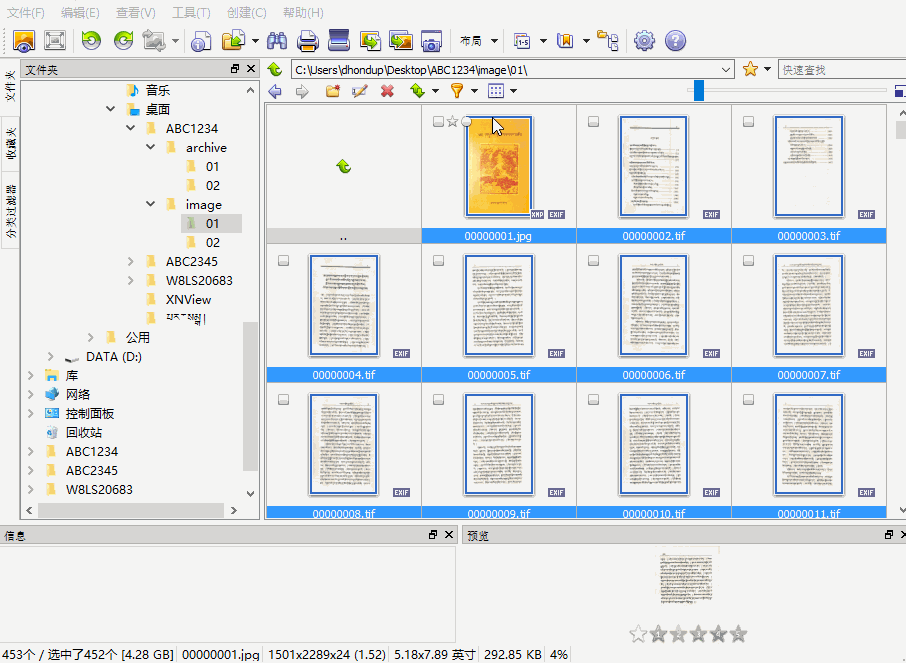

༡༣ ཚོན་ལྡན་རིགས་JPG ལ་བསྒྱུར་དགོས།
ཚོན་ལྡན་ལ་རིགས་གཉིས་ཡོད་དེ་ཚོན་ལྡན་རང་དང་ཚོན་ལྡན་སྐྱ་པར་གཉིས། དཔེ་ཆའི་ནང་གི་འདྲ་པར་རིགས་དང་ཚོན་ལྡན་ཡིག་གཟུགས་རིགས་སྐྱ་པར་དང་ཡང་ན་G4 ལ་བསྒྱུར་མི་རུང་བ་ཡིན། དེའི་ཕྱིར་པར་རིགས་དེ་དག་JPEG ལ་ངེས་པར་བསྒྱུར་དགོས། ད་དུང་སྐྱ་པར་ནང་གསལ་པོ་མེད་པའི་ཡིག་རིགས་ རྣམས་ཀྱང་JPEG ནང་བསྒྱུར་ཉར་བྱེད་དགོས། JPG འདིས་ནང་པར་གྱི་སྤྱིའི་བོངས་ཚད་ཆུང་རུ་གཏོང་འགྲོ་བར་མ་ཟད། འདིའི་སྔ་གཞུག་གི་བོངས་ཚད་ཀྱི་ཁྱད་པར་ལ་གཟིགས།

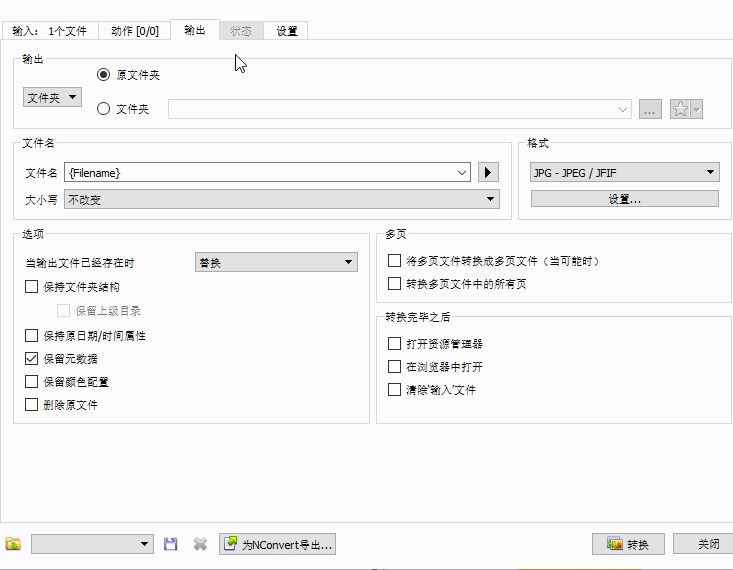
༡༤ རྒྱབ་ཤའི་ཆེ་ཆུང་སྣོན་སྒྲིག
དཔེ་ཆའི་རྒྱབ་ཤ་རྒྱབ་མདུན་གཉིས་ཀྱི་བོངས་ཚད་ཤོག་ངོས་གཞན་རྣམས་ལས་ཆུང་བ་ཡིན་ཚེ་དེ་གཉིས་ཀྱི་ཞེང་ཁ་དང་མཐོ་ཚད་གཞན་རྣམས་དང་གཅིག་གྱུར་གྱིས་རྒྱ་བསྐྱེད་གཏོང་དགོས། དཔེར་ན། རྒྱ་བསྐྱེད་ཀྱི་ཤོག་སྟོང་དེ་ཤོག་ངོས་ཀྱི་ཀླད་ལ་འགོད་དགོས་པ་དང་། གཡས་གཡོན་གཉིས་ཀྱི་གཡོན་དུ་འགོད་དགོས།
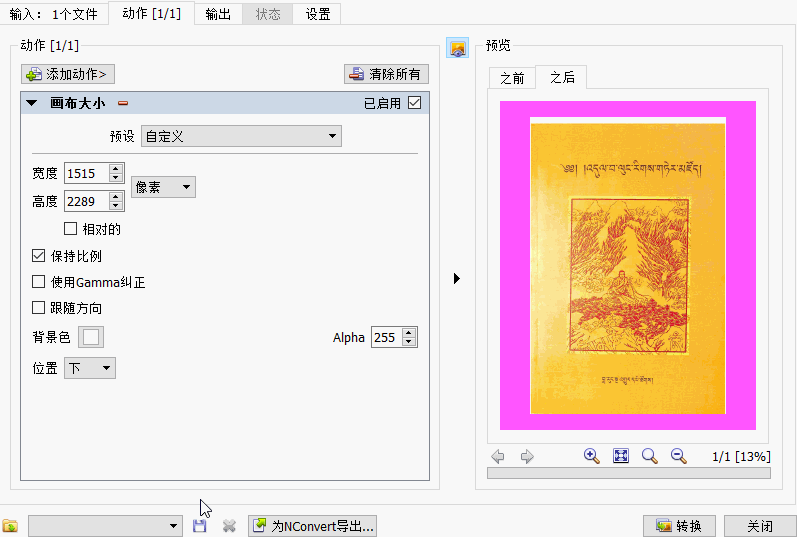
༡༥ བརྒྱ་ཆ་འཕྲི་ཐབས།
ཚོན་ལྡན་འདྲ་པར་རིགས་JPG ལ་བསྒྱུར་ཏེ་དེའི་སྤུས་ཚད་བརྒྱ་ཆ་༦༠ ལས་ཆུང་བར་བསྒྱུར་མི་རུང་།

གོང་གསལ་བཞིན་JPG དང་དེའི་སྤུས་ཚད་བརྒྱ་ཆ་༦༠ རྗེས་ད་དུང་ཤོག་ངོས་དེའི་ཆེ་ཆུང་KB ༤༠༠ ལས་བརྒལ་ཡོད་ཚེ་ཤོག་ངོས་དེའི་བརྒྱ་ཆ་ཉུང་འཕྲི་བྱེད་དགོས། འོག་གི་དཔེ་རིས་ལ་གཟིགས།


༡༦ XNView སྙི་ཆས་བསྐྱར་སྒྲིག
སྐབས་རེར་སྙི་ཆས་འདིའི་སྒྲིག་སྒམ་སྟེགས་བུ་མེད་པར་ཆགས་འགྲོ་བས་ངེས་པར་བསྐྱར་སྒྲིག་བྱེད་དགོས། སྐབས་དེར་སྟབས་བདེ་ཤོས་ཀྱི་ཐབས་ལམ་འདི་ལྟར་ཡིན། དེའི་འཆར་སྟོན་གྱི་རྣམ་པ་བཅས་འདི་ལྟར་སྒྲིག་འགོད་བྱེད་དགོས།
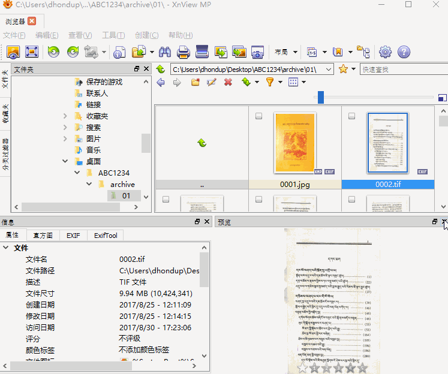